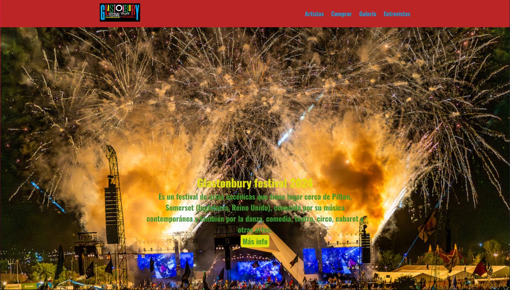

Juan Pablo Sánchez
Desarrollador Full-stack

Soy un Desarrollador Full Stack en formación, con una sólida comprensión en la creación de aplicaciones web robustas y escalables. Tengo experiencia en el desarrollo de APIs, la gestión de bases de datos y el diseño de interfaces intuitivas y responsivas. Me apasiona optimizar el rendimiento tanto en el frontend como en el backend, asegurando la calidad y la eficiencia del código en cada proyecto. Soy una persona comprometida, siempre en busca de oportunidades para aprender y mejorar mis habilidades en el desarrollo de aplicaciones completas y de alto rendimiento.
Descargar CVProyectos
Gestion de tareas
Aplicacion MVC de gestion de tareas, creada utilizando entityframework, linQ y los principios de clean code.
 Ver en GitHub
Ver en GitHub

Glastonbury
"Proyecto sobre el festival Glastonbury, creado con html y css para la materia Diseño e interfaz web.
 Ver en GitHubGestion de estancia
Proyecto MVC para administrar animales y empleados de una estancia.
 Ver en GitHub
Ver en GitHub
Gestion biblioteca
Aplicacion realizada en java para gestionar el prestamo de libros de una biblioteca. Pruebas realizadas con junit4.
 Ver en GitHub
Ver en GitHub